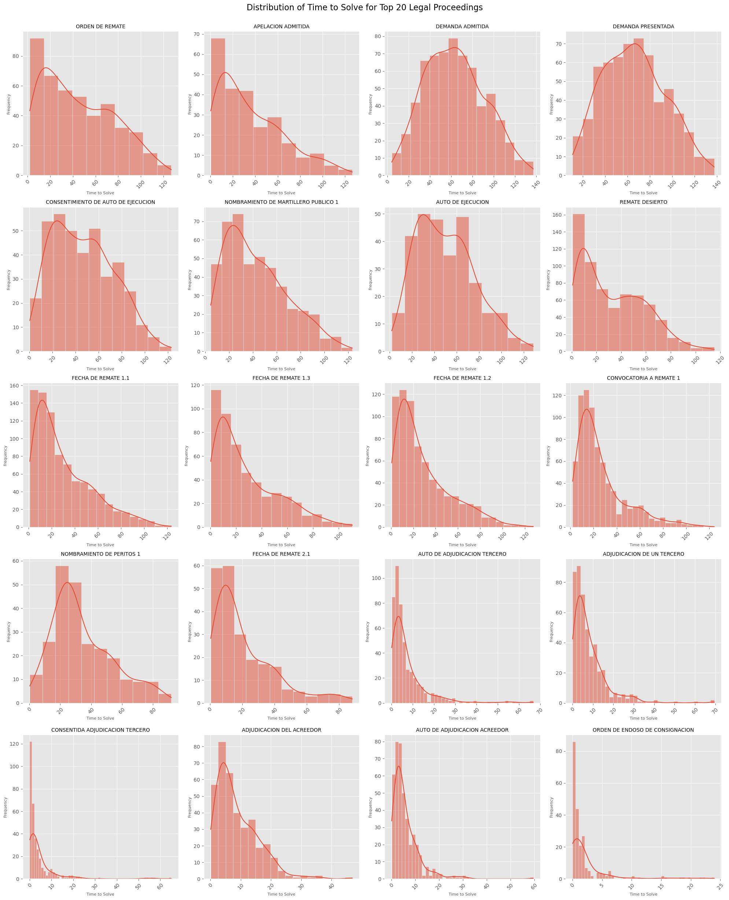

1 Introduction
Accurate prediction of foreclosure timelines is critical for optimizing the valuation of distressed mortgage assets. Foreclosure dates significantly impact the estimation of asset recovery values within a mortgage portfolio, which in turn serves as a baseline for portfolio valuation and the structuring of settlements or other termination strategies. The ability to forecast these timelines with precision allows to better manage risk, enhance asset recovery, and make informed decisions regarding portfolio performance. This report examines the current predictive model for foreclosure times and introduces an enhanced approach aimed at improving the accuracy and reliability of these predictions to better support strategic financial decisions.
2 Dataset Description
The dataset used in this project contains detailed information on mortgage foreclosure cases in Peru, including various legal proceedings associated with each case. This data is crucial for understanding the factors that influence the time it takes to resolve these cases. Key columns in the dataset include:
Portfolio Name: Identifies the portfolio to which the legal case belongs.
Legal File Name: A unique identifier for each legal case.
Date: The date of each legal proceeding.
Legal Stage: The stage of the legal process
Legal Proceeding: The specific type of legal action taken within the case.
Foreclosure Initial Date: The date when the foreclosure process began.
Resolution Date: The date when the case was resolved.
Time to Solve: The duration between the start and resolution of the case.
Geographical Information: Including Zone, Region, and Zone Group, which provide context on where the case is being handled.
Case Characteristics: Such as whether an appeal (cassation) was involved (Tiene Casacion) and the central stage of the legal process (Etapa Central).
3 Methodology for Evaluating Regression Models
To ensure our predictive model is accurate and reliable, we use several key metrics to evaluate its performance:
· Mean Absolute Error (MAE): This metric shows the average difference between the predicted and actual resolution times. In simpler terms, it tells us, on average, how many months the model’s predictions are off. The lower the MAE, the more accurate the model.
· Root Mean Squared Error (RMSE): RMSE is similar to MAE but gives more weight to larger errors. It provides a clearer picture of how often the model makes bigger mistakes in predicting resolution times. Again, lower values indicate a better-performing model.
· R-squared (R²): R² explains how well the model’s predictions match the actual outcomes. It’s expressed as a percentage, where a higher value means the model does a good job of capturing the key factors that determine resolution times. For example, an R² of 0.94 means that the model explains 94% of the variations in resolution times, leaving only 6% unexplained.
4 Approach for Current Model
The current model predicts the resolution time for foreclosure cases by using historical averages. Specifically, it looks at past cases and calculates the average time it took to resolve cases based on the type of legal proceeding involved. For each new case, the model predicts the resolution time by matching it to similar cases from the past and applying the average time for those cases. The process involves:
Data Collection & Cleaning: We gathered and cleaned past foreclosure data to ensure reliability.
Grouping by Legal Proceeding: Cases were categorized by legal proceeding type, and average resolution times were calculated for each group.
Prediction: The model predicts resolution time based on the type of proceeding, using historical averages. If no match is found, an overall average is used. This straightforward approach assumes that past performance predicts future outcomes.
4.1 Evaluation of the Current Model’s Performance
To evaluate the effectiveness of our current model, we tested it against foreclosure cases that have already been resolved. This allows us to compare the model’s predictions with the actual resolution times and measure its accuracy. The key metrics we used are:
Mean Absolute Error (MAE): The model’s average prediction was off by 16.68 months. This means that, on average, the model’s predictions are almost 17 months away from the actual resolution time.
Root Mean Squared Error (RMSE): This metric, which emphasizes larger errors, shows a typical prediction error of 22.06 months. The higher error indicates that the model struggles with cases that deviate significantly from the average.
R-squared (R²): The model explains only 39% of the variance in resolution times. This low percentage suggests that the model does not capture many of the factors influencing how long a case will take.
While the model provides some predictive capability, its accuracy and reliability are inadequate. The significant errors and low variance explanation suggest the need for a more sophisticated approach.
4.2 Analysis of the Actual vs. Predicted Graph for the Current Model
The Actual vs. Predicted graph compares the model’s predictions with the actual resolution times for foreclosure cases. In an ideal scenario, all data points would lie along the diagonal line (red dashed line), indicating that the predicted values perfectly match the actual values.

However, in the graph for the current model:
Wide Dispersion: Many points are scattered far from the diagonal line, indicating large prediction errors. This spread reflects the model’s inaccuracies, particularly in cases where the actual resolution time deviates from the average.
Horizontal and Vertical Lines: These occur because the model uses average times for specific legal proceedings, leading to identical predictions for different cases. This approach doesn’t account for the variability within those cases, resulting in clusters of predictions that don’t match the actual outcomes.
For example, in a specific case where the actual resolution time was 30 months, the model might have predicted only 15 months based on the average for that type of proceeding. This discrepancy highlights the model’s tendency to underestimate or overestimate the resolution time, depending on how closely a case aligns with the historical average.
4.3 Limitations of Using Averages for Predicting Time to Solve
The graphs in this section displays the distribution of resolution times for the 20 most common legal proceedings. Each bar or line in the graph represents how resolution times are spread out for these specific types of proceedings.

Wide Variance: For many legal proceedings, there is a broad range of resolution times. When the distribution of these times is far from the mean (average), using that average as a prediction leads to significant errors. This is because the average fails to capture the true spread of the data, especially in cases with outliers or skewed distributions.
Skewed Distributions: In some cases, the distribution is heavily skewed, meaning that a few cases take much longer or shorter than most others. The average gets pulled in one direction, making it a poor predictor for the majority of cases.

- Non-Normal Distributions: Many proceedings have skewed or uneven distributions, meaning that most cases are not near the average time. Using a simple average as a predictor fails to account for these nuances, leading to significant errors.
In essence, relying on averages oversimplifies the prediction process and fails to account for the variability in actual case outcomes. This can lead to substantial inaccuracies, especially when the distribution is not centered around the mean
5 Random Forest Predictive Model
To enhance the accuracy of our foreclosure time predictions, we developed a Random Forest model. This advanced machine learning technique constructs multiple decision trees, each one analyzing different aspects of the data. By averaging the predictions from these trees, the model effectively manages the complexities of the dataset and minimizes the risk of overfitting.
Our model leverages a wide range of features, such as the sequence of legal proceedings, time intervals between actions, and specific attributes related to the courts handling the cases. By considering these diverse factors, the Random Forest model delivers predictions that are significantly more accurate and reliable
5.1 Model Development
1. Data Preprocessing: Cleaned dataset, removed irrelevant columns, handled missing values, and filtered for foreclosure cases. This ensures we’re working with accurate, relevant data.
2. Feature Engineering: We created features such as Months_Since_Start, Proceeding_Count, Months_Since_Last_Proceeding, Average_Months_Between_Proceedings, Distinct_Proceeding_Types, and Repeated_Proceeding_Count. These features capture key temporal, procedural, and case-specific aspects, improving prediction accuracy.
3. Encoding and Scaling: Applied Target Encoding for high-cardinality variables, Label Encoding for other categorical features, and StandardScaler for numerical features. This prepares the data for optimal model performance.
4. Model Training: Split the dataset, then trained a Random Forest with 300 trees. This approach leverages multiple decision trees to make robust predictions about foreclosure resolution times.
5.2 Results
The Random Forest model’s performance in predicting foreclosure resolution times is summarized by the following key metrics:
Mean Absolute Error (MAE): 4.89 months
Root Mean Squared Error (RMSE): 6.99 months
R-squared (R²): 0.94
These metrics indicate a high level of accuracy, with the model explaining 94% of the variance in the resolution times, and relatively low prediction errors.

5.3 Feature Importance
The bar chart ranks the importance of various features used by the model to make predictions. Added Features like Months_Since_Start, and Proceeding_Count emerge as the most significant factors influencing the resolution time.
Understanding which features most strongly affect the model’s predictions can provide valuable insights. For instance, the high importance of Months_Since_Start and Proceeding_Count highlights the relevance of the duration and frequency of legal actions in determining how long a foreclosure case will take to resolve.

This visualization provides a clear ranking of the features that have the most significant impact on the model’s predictions. It offers valuable insights into which factors are most influential in determining foreclosure resolution times.
6 Recommendations
Expand Features: Expand Features: Enhance the model’s accuracy by incorporating additional features, such as Loan-to-Value (LTV) ratios to help predict whether a foreclosure will be resolved by a third party or the creditor, along with economic indicators or more detailed geographic data.
Explore Advanced Techniques: Consider testing more advanced machine learning techniques in the future for further improvements
Integrate with Financial Tools: Integrate the model’s predictions into existing financial systems to support seamless decision-making and help structure DPO (Discounted Payoff) agreements more effectively.